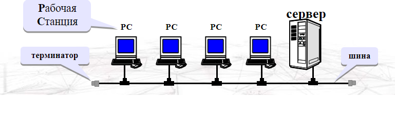
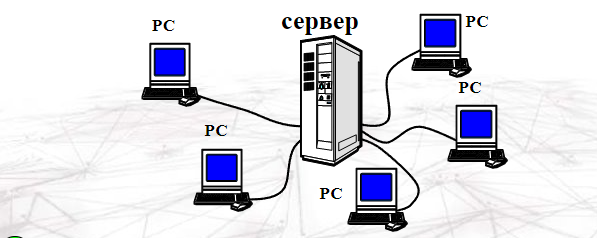
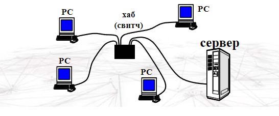
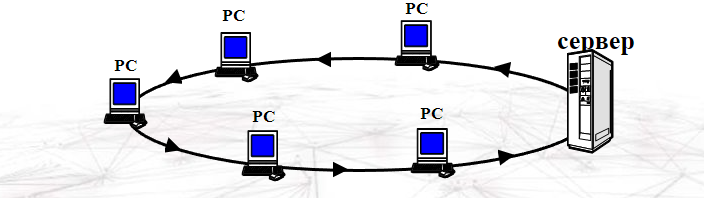
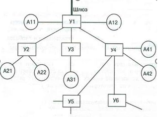

Локальные и глабальные компьютерные сети
Что такое компьютерная сеть?
Компьютерная сеть – это группа компьютеров, соединённых линиями связи:
- электрические кабели
- телефонная линия
- оптоволоконный кабель (оптическое волокно)
- радиосвязь (беспроводные сети, Wi-Fi)
Что приобрели?
- совместное использование ресурсов (данные, программы, внешние устройства)
- электронная почта
- быстрый обмен информацией между компьютерами
Что потеряли?
- финансовые затраты (техника, программное обеспечение)
- снижение безопасности (вирусы, шпионаж)
- нужен специалист по обслуживанию (системный администратор)
Классификация компьютерных сетей
Компьютерные сети делятся на:
- - глобальные — вычислительная сеть объединяет абонентов, расположенных в различных странах, на различных континентах. Глобальные вычислительные сети позволяют решить проблему объединения информационных ресурсов человечества и организации доступа к этим ресурсам;
- - региональные — вычислительная сеть связывает абонентов, расположенных на значительном расстоянии друг от друга. Она может включать абонентов большого города, экономического региона, отдельной страны;
- - локальные — вычислительная сеть объединяет абонентов, расположенных в пределах небольшой территории. К классу локальных сетей относятся сети отдельных предприятий, фирм, офисов и т. д.
Объединение глобальных, региональных и локальных компьютерных сетей позволяет создавать многосетевые иерархии, обеспечивающие мощные средства обработки огромных информационных массивов и доступ к неограниченным информационным ресурсам.
Как устроена компьютерная сеть
Компьютерная сеть – это система компьютеров, связанных каналами передачи информации. Они бывают локальными и глобальными.
Локальные сети
Локальные сети – это небольшие компьютерные сети, работающие в пределах одного помещения.
Локальная сеть дает возможность более эффективно использовать ресурсы объединенных в сеть компьютеров.
С точки зрения организации взаимодействия отдельных элементов ЛС выделяется два типа таких систем:
- одноранговая сеть; в ней все объединенные компьютеры равноправны;
- сеть с выделенным сервером.
Основой программного обеспечения ЛС является сетевая операционная система. Важнейшая задача сетевой ОС – поддержка такого режима работы ЛС, чтобы работающие в ней пользователи могли использовать общие ресурсы сети и при этом не мешать друг другу.
- Одноранговые сети все компьютеры равноправны Операционные системы: Windows 3.11 / 95 / 98 / 2000 / XP / Vista / 7/ 8.1
-
Сети с выделенным сервером Сервер – компьютер, предоставляющий свои
ресурсы (файлы, программы, внешние устройства) в общее
использование.
- файловый сервер
- сервер печати
- почтовый сервер
Клиент – компьютер, пользующийся услугами сервера.
Операционные системы для серверов: Windows 2003 Server / 2008 Server, Linux, UNIX
Технология «клиент-сервер»
Клиент
- посылает запрос с заданием
- выводит на экран ответ, полученный от сервера
Сервер
- принимает запросы от клиентов и ставит их в очередь
- выполняет задание
- посылает ответ с результатами
Преймущества
- вся обработка данных – на сервере, РС могу быть маломощными
- дешевле модернизация
- меньше нагрузка на сеть (передаются только нужные данные)
- защита устанавливается на сервере (в одном месте)
Недостатки
- финансовые затраты (техника, программное обеспечение)
- сложная настройка сервера
Схема (топология) «общая шина»
Преймущества
- простота, малый расход кабеля
- легко подключать рабочие станции
- при выходе из строя РС сеть работает
Недостатки
- при разрыве шины сеть выходит из строя
- низкий уровень безопасности
- один канал связи, передача по очереди
- возможны конфликты (одновременная передача данных)
- сложно искать неисправности (непонятно, кто "завесил" сеть)
- длина шины ограничена (затухание сигнала)
Схема «звезда»
Преймущества
- единый центр управления, конфликты невозможны
- высокий уровень безопасности (всё идет через сервер)
- на каждой линии только 2 компьютера – проще обмен данными
- обрыв кабеля и выход из строя РС не влияет на работу сети
- все точки подключение собраны в одном месте (проще ремонт)
Недостатки
- если сервер вышел из строя, сеть не работает
- большой расход кабеля
- ограничение количества клиентов (8 или 16)
- размер ограничен
Пассивная «звезда»
Преймущества
- обрыв кабеля и выход из строя РС не влияет на работу сети
- все точки подключение собраны в месте (проще ремонт)
- можно наращивать размер (цепочка хабов)
Недостатки
- нет центрального компьютера
- если хаб вышел из строя, сеть не работает
- большой расход кабеля
Схема «кольцо»
Преймущества
- размер сети до 20 км
Недостатки
- при выходе из строя любого компьютера или разрыве линии сеть не работает
- низкая безопасность
- скорость передачи данных падает при увеличении размеров сети
- сложно подключать новую РС
Глобальные сети
Глобальная сеть объединяет в себе многие локальные сети, а также отдельные компьютеры, не входящие в локальные сети. Масштабы глобальных сетей не ограничены: от региональных до всемирных.
Глобальную компьютерную сеть называют телекоммуникационной сетью, а процесс обмена информацией по такой сети называют телекоммуникацией.
Существует мировая система компьютерных сетей, через которую можно установить связь с самыми далекими уголками планеты. Эта система называется Интернет.
Глобальная сеть Интернет
Интернет представляет собой глобальную компьютерную сеть, соединяющую отдельные сети. Интернет обеспечивает обмен информацией между всеми компьютерами.
Соединение сетей обладает громадными возможностями. Интернет предоставляет в распоряжение своих пользователей множество всевозможных ресурсов. В Интернете используются два основных протокола: межсетевой протокол IP разделяет передаваемые данные на отдельные пакеты и снабжает их заголовками и указанием адреса получателя, а протокол управления передачей TCP отвечает за правильную доставку пакета. Так как эти протоколы взаимосвязаны, обычно говорят о протоколе TCP/IP.